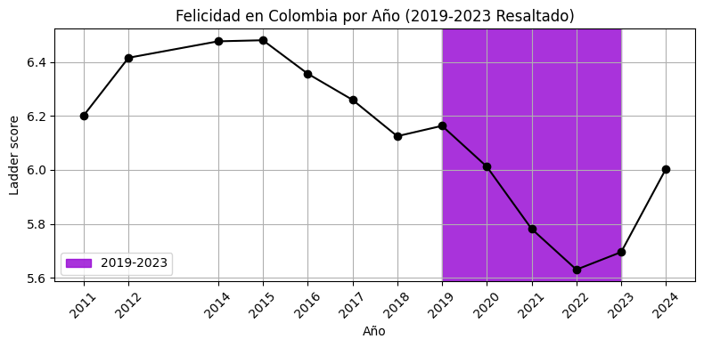
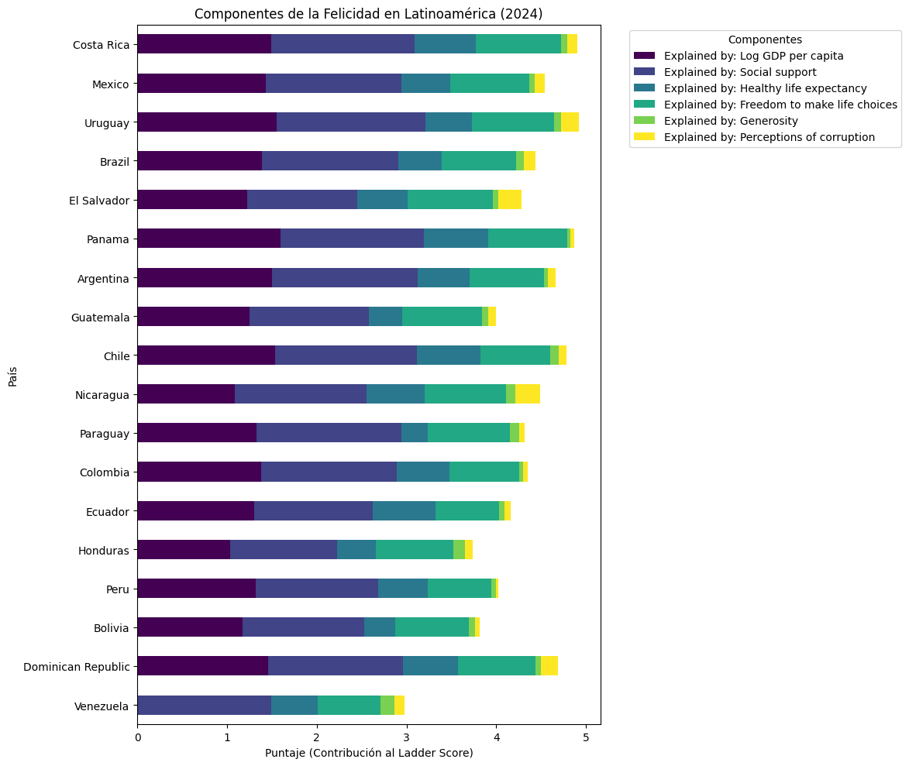

El estado de la felicidad en Colombia
Contexto y Análisis Actual
La felicidad en Colombia ha experimentado una transformación significativa, pasando de entenderse principalmente como una expresión cultural asociada a la celebración y al optimismo colectivo, a concebirse como una construcción social vinculada a la resiliencia y a la búsqueda de condiciones estructurales más estables. Este proceso ha estado influenciado por múltiples factores: la persistencia del conflicto armado y los posteriores esfuerzos de paz, que modificaron las expectativas frente al futuro; las dinámicas económicas, marcadas por la desigualdad, el desempleo y la informalidad, que inciden directamente en la percepción de seguridad y bienestar; las brechas territoriales en acceso a educación, salud y oportunidades laborales; así como los cambios generacionales que han puesto mayor énfasis en la salud mental, la estabilidad emocional y la equidad social.

Situación social
Cronología detallada de los eventos sociales en Colombia (2011-2024).
Tendencias
Análisis de la resiliencia en Colombia.
Comparativa
Comparativa económica regional.
¿Colombia se encuentra por encima o por debajo del promedio latinoamericano?
Según la gráfica de Componentes de la Felicidad en Latinoamérica (2024), Colombia se ubica ligeramente por debajo del promedio regional, ya que su puntaje total no está entre los más altos y se encuentra en una posición intermedia frente a otros países como Costa Rica, Uruguay o México. Aunque el país presenta fortalezas en aspectos como el apoyo social y una contribución moderada en libertad para tomar decisiones, sus niveles de ingreso (PIB per cápita) y la percepción de corrupción reducen su puntaje global en comparación con las naciones mejor posicionadas. Para mejorar su nivel de felicidad, Colombia necesitaría fortalecer su crecimiento económico con mayor equidad, generar más oportunidades laborales formales, mejorar la confianza en las instituciones mediante la reducción de la corrupción y seguir ampliando el acceso a salud y bienestar social, de modo que estos factores impulsen un mayor bienestar general en la población.
1. Equidad Territorial: Que la calidad de vida de un campesino en el Chocó o el Catatumbo no sea abismalmente distinta a la de alguien en Bogotá.
2. Seguridad Psicológica: Eliminar el miedo constante que genera el conflicto, permitiendo que la gente planee a futuro sin incertidumbre.
3. Confianza en las Instituciones: La felicidad crece cuando el ciudadano siente que el sistema trabaja para él y no al revés.

Fuentes y Bibliografía
- • Autor: Orlando Contreras Leguia
- • Contacto: orlandocontreras1001@gmail.com
- • DANE: Encuesta de Pulso Social y reportes de Pobreza (2011-2024).
- • Ministerio de Salud y Protección Social: Informes de Bienestar.
- • World Happiness Report / PNUD Colombia.
Accedido el: